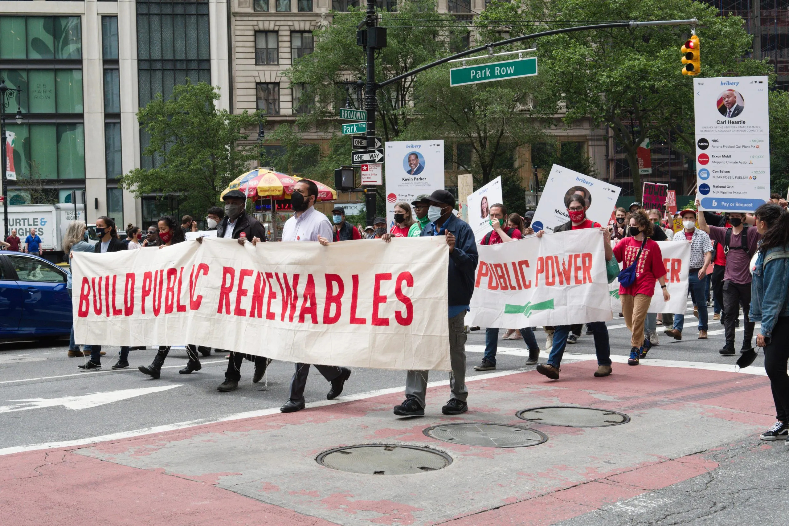

Sofia Demopolos is a media-maker with a breadth of experience in design, photography, video, and creative strategy. Currently earning her MFA in Integrated Media Arts at Hunter College, Sofia freelances with Greenpill Collective and teaches Intro to Digital Media to undergraduates. She is passionate about progressive politics and paving a brighter future. She is based in Brooklyn.

